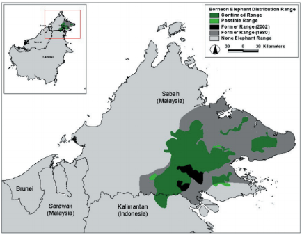

Pygmy elephants usually grow between 2.5 meters to 3 meters. Males are usually a bit larger than females. Pygmy elephants are chubby elephants with large ears and a long tail that drags behind them when they walk. The males also have straight tusks. Females rarely have tusks but if they do, they are only visible when they open their mouth. Pygmy elephants weigh between 6,500lbs - 11,000lbs (3,000kg - 5,000kg). Pygmy elephants live about 55 to 70 years in the wild and over 80 years in captivity. Their skin is leathery and their skin color is a mix in between dark grey and brown. They are called pygmy elephants because of their size and the fact that they are less aggressive than other Asian elephants.
Pygmy elephants' diet in the wild is palms, grasses, and wild bananas. A single adult can eat up to 150 kg of vegetation. These elephants also love durian (type of spiny tropical fruit), they will take the entire fruit (with the spikes), roll it in the mud and swallow it whole. In zoo's, the workers try to give the elephants similar to what they would get in the wild but they make sure it's balanced nutrition. They also give the elephants salt licks which have the minerals the elephants need. In the wild, they would get the minerals from clear rich soils. Pygmy elephants also need to drink water at least once a day. They only travel near water sources and they are very good swimmers.
Pygmy elephants are shy and generally avoid people. They are gentler than other elephant species. They live in small herds, groups of around 8 individuals led by a female, but larger groups can be seen gathering in feeding groups, usually by riverbanks. Groups consist of mothers, daughters, sisters, and males. Sometimes males are with their herds, although most live in solitary. Sometimes they temporarily gather in bull herds. Pygmy elephants spend most their time in lowlands and valleys. Hills and Mountains cannot sustain them. They live in tropical and subtropical moist broadleaf forests. In Borneo, the pygmy elephant can be found in the northern and north eastern areas. They are also found in the international boundary between Malaysian Sabah and Indonesian Kalimantan.
Borneo Pygmy Elephant Distribution
The Borneo Pygmy elephant is an endangered species of elephants. There are estimated to be less than 1,500 left in the world. The main reason that pygmy elephants are endangered is that their habitat is shrinking. They need a large area to find enough food to sustain them and their herds. The shrinking forests has also created more human contact between the elephants and humans. Pygmy elephants usually stay away from humans because when there is contact, there is usually conflict. Now that there is more contact, there is also more conflict. Both the elephants and farmers want the palms. Elephants eat them and the farmers take the palm oil. Farmers are resorting to violent tactics to keep the pygmy elephants away from their crops and the elephants are ending up dead. Another reason is that people are hunting and logging in the area where the pygmy elephants are. Pygmy elephants used to go to Sabah to the Kinabatangan River but their path has been cut off by illegal loggers. Pygmy elephants have not visited the river in years. Besides that, there are also poachers and hunters who kill the elephants for their ivory tusks. If the poachers or hunters were caught, they would have to pay a fine of $50,000, go to jail for five years or possibly both. Pygmy elephants don't have many other predators because of their size. Their only predators are really humans and tigers, although the tigers tend to go for the calves because they are smaller and weaker.